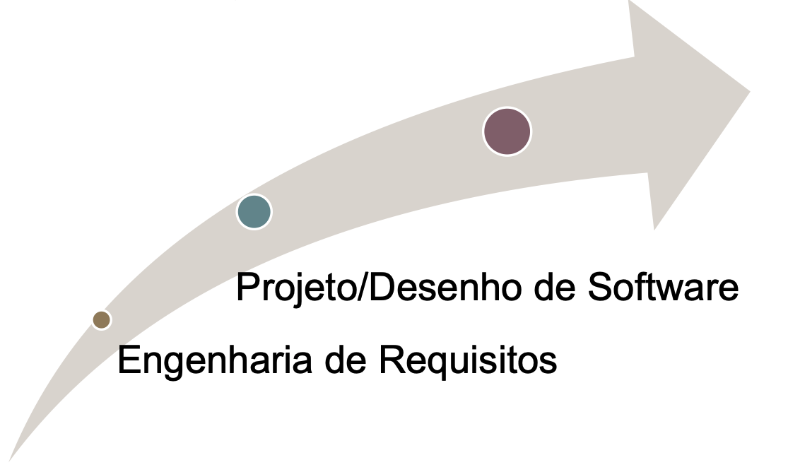
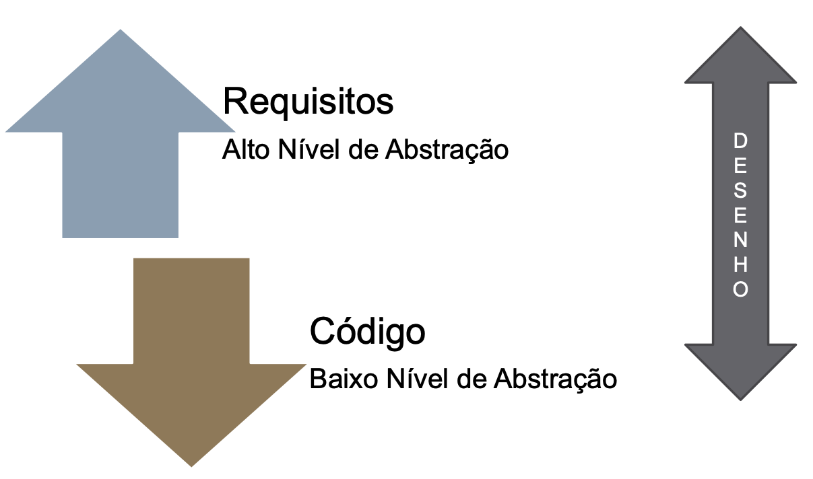

Contextualizando com Engenharia de Requisitos
Tudo começa na E.R

Desenho de Software
- Núcleo técnico da engenharia de software.
Basicamente, elementos do modelo de análise (Ex.: Casos de uso), fornecem insumos para criação dos modelos de especificações de projeto.

- Define o que é a solução (Arquitetônico)
- Define como é a solução (Projeot Lógico). Como cada componente deve ser implementado.
-
Engenharia de Requisito:
- Modelagem do PROBLEMA (Entender)
- Qual o problema?
- Como ele ocorre?
- Mundo Real
-
Desenho de Software
- Modelagem da SOLUÇÃO (Criar)
- Qual é a solução?
- Como ela ocorre?
- Mundo Computacional
Artefatos de Software
5W2H
- What?
- Why?
- Who?
- Where?
- When?
- How?
- How much?
Exemplo:

Rich Picture
- Diagrama Causa-Efeito
- Ishikawa
Brainstorm

Glossário
- Ligado à Definição.
Léxico
- Definição + Ação
- Verbo, Objeto, Estado
| Tipo | Noção | Impacto |
|---|---|---|
| Verbo | Quem realiza, quando acontece e quais os procedimentos envolvidos | Quais os reflexos da ação no ambiente e quais os novos estados decorrentes |
| Objeto | Definir o objeto e identificar outros objetos com os quais se relaciona | Ações que podem ser aplicadas ao objeto |
| Estado | O que significa e quais ações levaram a esse estado | Identificar outros estados e ações que podem ocorrer a partir do estado quie se descreve |
Tratando Sofware como PRODUTO!
- No sentido de estimativas
- Tempo, esforço, cronograma, custo ...
Design Sprint
- MAP
- Coletar o maior número de informações possíveis
- Big Picture (Sugestão)
- ESBOÇO
- Fazer desenhos de várias ideias
- Rich Picture
- DECIDE
- Qual será a solução?
- Rich Picture final
- STORYBOARD
- Ou protótipo (Ex.: FIGMA)
- Já é possível validar, protóticpo agrega demais e tem muito valor para os stakeholders.
- ANÁLISE (VALIDAÇÃO)
- Usa personas (para identificar usuários)
- checklists
- Questionários
Processos & Metodologias & Abordagens
RUP
- É um processo, foi o primeiro de todos. Foco em equipes grandes, pois exige muita documentação.
- Separado por disciplinas para desenvolvimento COMPLETO do software. Desde UX, Implementação, e gestão de risco.
Possui 4 fases, sendo elas:
- Concepção
- Elaboração
- Construção
- Transição
Sendo bem completo em todas as fases.
OpenUP
Baseado no RUP, mas com uma pegada mais ágil, bem como os princípios do Lean Inseption.
- Microincrementado. (Days).
- Interação (Weeks).
- Projeto (Months).
- Equilibrar prioridades
- Arquitetura
- Ciclos
- Iniciação -> Elaboração, contrução e transição
Metodologias Ágeis (Scrum)
Criado para melhorar a gestão de projetos, promovendo flexibilidade, colaboração e adaptação constante. - Transparência - Inspeção - Adaptação
Possui 4 fases:
| Fase | Propósito | Resultado |
|---|---|---|
| Planning | Definir escopo da iteração, quais itens serão entregues do backlog | Um backlog possivelmente refinado, junto a um plano inicial de como será ao longo |
| Daily | Reportar diariamente o progesso individual da equipe, o que foi feito dia anterior e possíveis impedimentos | Resolver esses posíveis impedimentos e incentivar a comunicação do time |
| Review | Apresentar o incremento de produto desenvolvido na sprint, com inspeção, feedback e talvez adaptação de backlog | Demonstração do trabalho concluído, feedback dos stakeholders convertidos em novos itens do backlog |
| Retrospective | Refletir sobre o processo do time durante o Sprint, buscando pontos de melhoria, pontos de otimização | Plano de melhorias para a próxima Sprint, com ações baseadas nos aprendizados da equipe, visando a evolução contínua do processo de trabalho |
Lean
Resultado das práticas e bons resultados do sistema Toyota, surgiu com esse objetivo de eliminar desperdícios, considerar propósitos claros, melhorar processos, entregar valor ao cliente.
Princípios:
- Definição de valor
- Mapeamento do fluxo de valor
- Criar fluxo
- Estabelecer um sistema puxado
- Buscar perfeição
Boas práticas:
- Identificar e eliminar desperdícios
- Focar na sarisfação do cliente
Promodoro Technique
Objetivo de melhorar o desempenho em qualquer tipo de trabalho ou estudo. Utilizando as técnicas de:
- Dividir o trabalho em pequenos intervalos (PROMODOROS).
- 1 intervalo após o promodoro (Pausa curta).
- Após 4 promodoros uma pasua longa (15 a 30 min).
Exemplo:
- 25 min de trabalho focado.
- Pausa curta
- Repetição de trabalho
- Pausa longa
Crystal Methodology
Baseado na gestão de pessoas. Dentre os princípios:
- Comunicação frequente
- Adaptação contínua
- Entrega frequente
- Foco em pessoas
Ciclos:
- Exploration
- Planning
- Iteration
- Release
Ideal para pequenas/médias equipes, por conta da flexibilidade e menos burocracia (documentação).
Atomic Desing
Uma abordagem modular e estruturada para desing de interfaces de usuários. Com objetivo de criar desing escaláveis, reutilizáveis e consistentes.
Ciclo do atomic desing
- A interface é decomposta em seus elementos mais simples (átomos)
- Esses elementos são recompostos até formar uma interface completa (páginas)
- O processo é iterativo e contínuo, permitindo reufinamento a cada iteração e reuso dos componentes.
Separado em:
Átomos
- Elementos básicos e indivisíveis da interface, como botões, campos de entradas e rótulos.
Moléculas
- São grupos de átomos que juntos formam um componente menor, como bara de pesquisa ou campos de formulários
Organismos
- São grupos mais complexos de moléculas e átomos que formam seções distintas da interface, como cabeçalhos ou cards de produtos
Organismos com diferentes moléculas
Cada cabeçalho de um site é organizado em um organismoe nele pode-se encontrar diferentes moléculas, como:
- A Barra de pesquisa é uma molécula
- O logotipo do site, pode ser considerado uma molécula simples
Organismos com moléculas semelhantes
Em sites de e-commerce, a disposição dos produtos são formados por moléculas de estruturas semelhantes.
Templates
Layouts de página no nível de esqueleto, definindo estruturas onde os elementos reais serão colocados, porém sem conteúdo real.
Pages
São instâncias específicas de templates com conteúdo real inserido, representando a página final que o usuário verá.